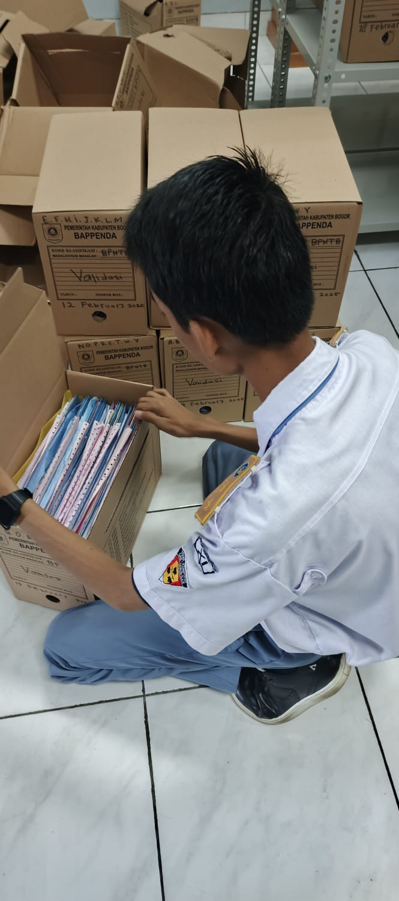

-

Pajak Bumi dan Bangunan (disingkat PBB) adalah pungutan yang harus dibayar atas keberadaan bumi dan bangunan yang memberikan manfaat dan status sosial ekonomi bagi seseorang atau badan yang mempunyai hak atasnya atau mendapatkan manfaat padanya. Karena Pajak Bumi dan Bangunan bersifat material, besaran tarif ditentukan dari luas dan kondisi tanah atau bangunan yang ada.
Langkah – langkah proses pendataan arsip PBB yaitu:
1. Pemilahan Arsip
Memisahkan Arsip berdasarkan jenis Arsip (BPHTB atau PBB).
Mengelompokkan Arsip berdasarkan tahun untuk memudahkan
penataan di rak Arsip.
Memastikan Arsip rusak diperbaiki terlebih dahulu (seperti
meluruskan berkas agar rapi, mengganti map, mengganti kardus, dll.).
2. Persiapan Box Arsip
Menentukan jumlah box yang dibutuhkan berdasarkan jumlah berkas
per tahun.
Menyusun box dalam keadaan kosong dan memastikan box dalam
kondisi baik.
3. Memasukkan Arsip ke Box
Arsip dimasukkan ke dalam box secara berurutan sesuai hasil
pemilihan tahun.
Berkas ditempatkan secara rapi agar tidak terlipat atau rusak.
4. Pembuatan & Penempelan Label Box
Isi label box meliputi :
Jenis Arsip : BPHTB atau PBB, Tahun Arsip, Nomor box, Jumlah
Berkas (opsional jika dibutuhkan).
Label ditempel pada bagian depan dan samping box agar mudah
terlihat.
5. Pencatatan Box dalam Daftar Inventaris Arsip
Setiap box yang selesai diisi dicatat dalam daftar inventaris dengan
keterangan :
Nomor box, Tahun Arsip, Jumlah berkas, dan Kondisi fisik box.
Daftar inventaris menjadi dasar penataan di rak pada bulan
berikutnya.